此為EdgeTpu執行環境所需安裝操作筆記，雖然並未在實體主機上進行操作，而是使用虛擬機來進行，但是，在虛擬機上所有步驟操作，跟實體主機上操作差異並不大。
有關於虛擬機如何安裝Ubuntu 18.04部份，並不會出現在此筆記上進行步驟講解介紹，需自行完成此部分安裝設置。
此筆記內容是從虛擬機已安裝完畢系統，並從一個正常啟動系統起點開始。
關於虛擬機如何跟Google Coral USB Accelerator進行連接使用
將裝置連接至電腦USB，並根據彈出詢問連接至何處詢問視窗，設置連接到指定虛擬機器。
[New USB Device Detected ]→ Connect to a virtual machine
需注意!! 當選擇Connect to host時，虛擬機是沒辦法讀取的到 Google Coral USB Accelerator，也就是沒有掛載進去虛擬機裡面。
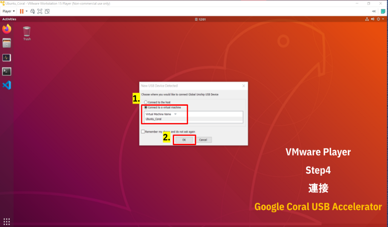
我們可以在以下項目步驟中確認USB裝置連接狀態
[Player] →[Removable Devices] →[Global Unichip Usb Device] →Connect(Disconnect from host)
首先，需要確認在[Removable Devices]裡面是否有出現[Global Unichip Usb Device] ，這是Windows上識別Google Coral USB Accelerator裝置代稱。
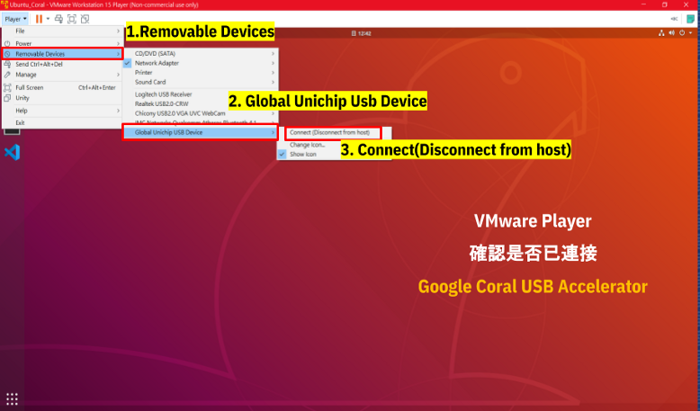
關於自製安裝與範例腳本與執行流程
自製安裝腳本可取得來源：
https://github.com/s123600g/Edgetpu_Install_Script
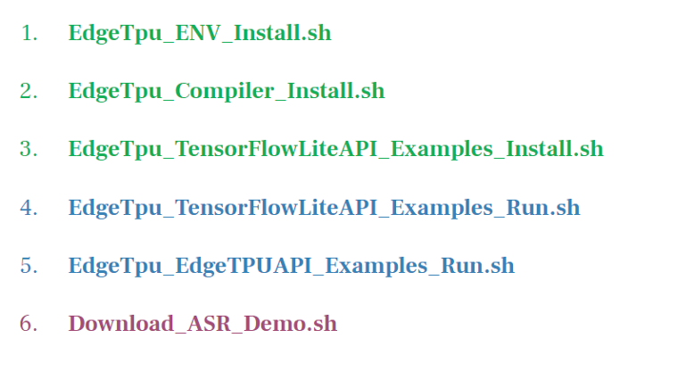
執行安裝腳本流程如下圖：
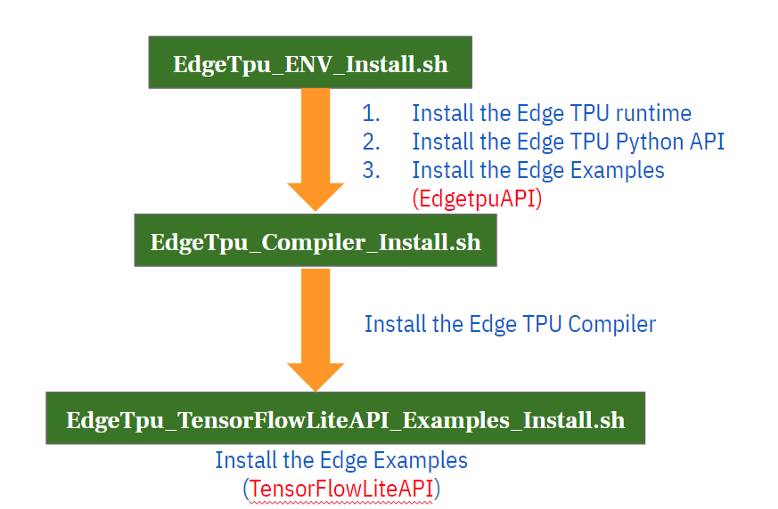
執行範例腳本流程如下圖：
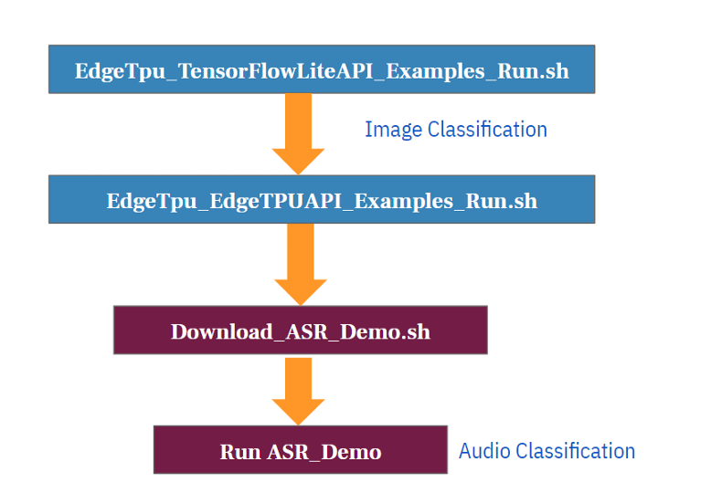
關於範例部份，分為二個不同執行區塊，第一個區塊為使用官方範例，第二個區塊為使用自己寫的語音模型範例，兩者皆是以Classification模式下去進行。
第一區塊使用官方範例，這裡有分成使用 TensorFlowLiteAPI 與 EdgeTPUAPI
EdgeTpu_TensorFlowLiteAPI_Examples_Install.shEdgeTpu_TensorFlowLiteAPI_Examples_Run.shEdgeTpu_EdgeTPUAPI_Examples_Run.sh看到這裡你應該會有一個疑問，為什麼會區分這兩者，又不同在哪裡?
TensorFlowLiteAPI是屬於使用Tensorflow Lite官方原始API，進行調用模型運作Classfication範例運作。
關於TensorFlow Lite 可參考Get started with TensorFlow Lite
關於EdgeTpu使用TensorFlowLiteAPI可參考Run inference with TensorFlow Lite in Python
如果是使用TensorFlowLiteAPI，你應該要注意關於 TensorFlow Lite interprete安裝注意事項Install just the TensorFlow Lite interpreter
EdgeTPUAPI是Google Coral團隊為EdgeTpu打造自製 API，簡化了程式碼開發上所需要的架構，透過簡化的API提供的函式庫，可以更簡單地從調用EdgeTpu裝置到運作執行操作，官方目前提供了兩種主要執行模式，一種為Classification，另一種為Detection。
可以參考Edge TPU Python API overview
第二區塊使用自己寫的語音模型範例
Download_ASR_Demo.sh
此為使用EdgeTpu應用在語音模型預測之簡單實例之範例，再此不再贅述內容介紹。
確認能夠正常顯示Package清單
pip3 list
如果能夠正常顯示Package清單，那就是完成這一步設置，以下是為正常顯示操作。
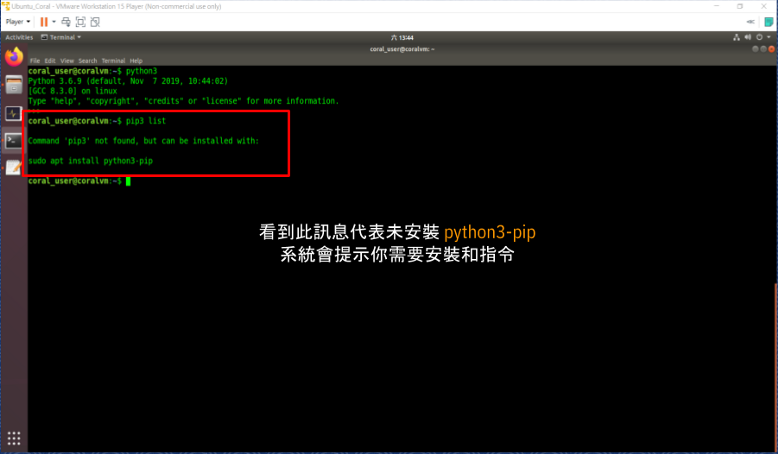
如果未正常顯示代表未安裝python3-pip，執行下列指令進行安裝
sudo apt-get install python3-pip
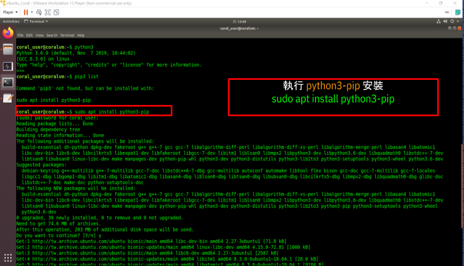
使用安裝腳本EdgeTpu_ENV_Install.sh
sudo bash EdgeTpu_ENV_Install.sh
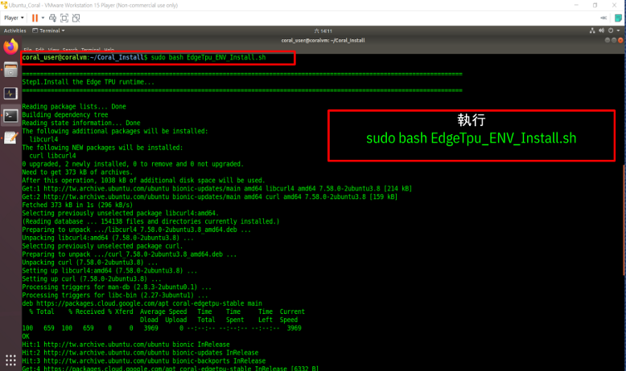
此腳本主要執行內容為以下步驟：
1. 安裝EdgeTPU Runtime
# 將Package來源清單加入至系統套件來源名單
echo "deb https://packages.cloud.google.com/apt coral-edgetpu-stable main" | sudo tee /etc/apt/sources.list.d/coral-edgetpu.list
# 下載來源清單驗證金鑰並加入至套件金鑰管理
curl https://packages.cloud.google.com/apt/doc/apt-key.gpg | sudo apt-key add -
# 執行所有套件資訊更新
sudo apt-get update
# 進行安裝EdgeTPU runtime library(此為一般標準模式，也就是標準效能運作)
sudo apt-get install -y libedgetpu1-std
# 如果需要最大效能模式，請改安裝下面EdgeTPU runtime library(需要搭配USB3.0)
sudo apt-get install libedgetpu1-max
2. 安裝EdgeTPU Python API
# 安裝EdgeTPU官方Python API 函式庫
sudo apt-get install -y python3-edgetpu
3. 安裝EdgeTPU Examples
# 安裝EdgeTPU官方Python提供範例包與程式環境設置
sudo apt-get install -y edgetpu-examples
/usr/share/edgetpu/examples/使用安裝腳本EdgeTpu_Compiler_Install.sh
sudo bash EdgeTpu_Compiler_Install.sh
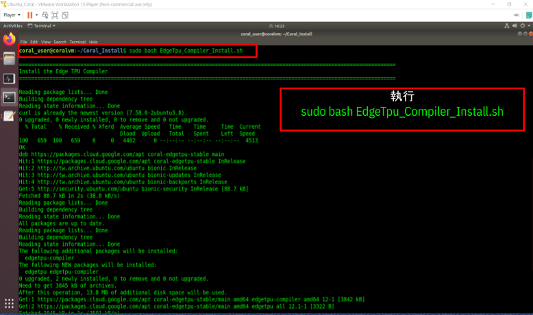
此腳本主要執行內容為以下：
# 下載來源清單驗證金鑰並加入至套件金鑰管理
curl https://packages.cloud.google.com/apt/doc/apt-key.gpg | sudo apt-key add -
# 將Package來源清單加入至系統套件來源名單
echo "deb https://packages.cloud.google.com/apt coral-edgetpu-stable main" | sudo tee /etc/apt/sources.list.d/coral-edgetpu.list
# 執行所有套件資訊更新
sudo apt-get update# 進行安裝EdgeTPU Compiler
sudo apt-get install -y edgetpu-compiler
此步驟沒有安裝腳本，需要進行手動操作。
如果是使用TensorFlowLiteAPI來調用EdgeTPU執行，需要完成此步驟安裝，它的功能就跟EdgeTPU runtime是一樣，需要有它才能進行運作。
使用Python wheel形式安裝(.whl 檔案)，安裝檔案可至以下連結內找到下載，並有說明可以參考
Python quickstart - Install just the TensorFlow Lite interpreter
因為是在PC平台上運作，所以需要選擇 x86-64平台，對應Python版本有3.5、3.6、3.7，依據自己所使用版本選擇，此筆記範例所使用是3.6
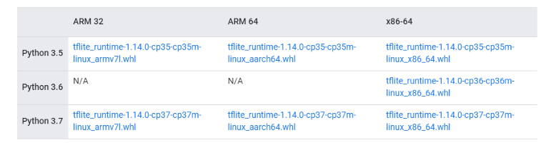
此筆記範例所使用是3.6 –> tflite_runtime-1.14.0-cp36-cp36m-linux_x86_64.whl
以虛擬機環境為例，以下為安裝指令操作
# 切換到檔案所在位置底下
cd /home/coral_user/Coral_Install/TensorFlow Lite interpreter
# 進行Python Package安裝
pip3 install tflite_runtime-1.14.0-cp36-cp36m-linux_x86_64.whl
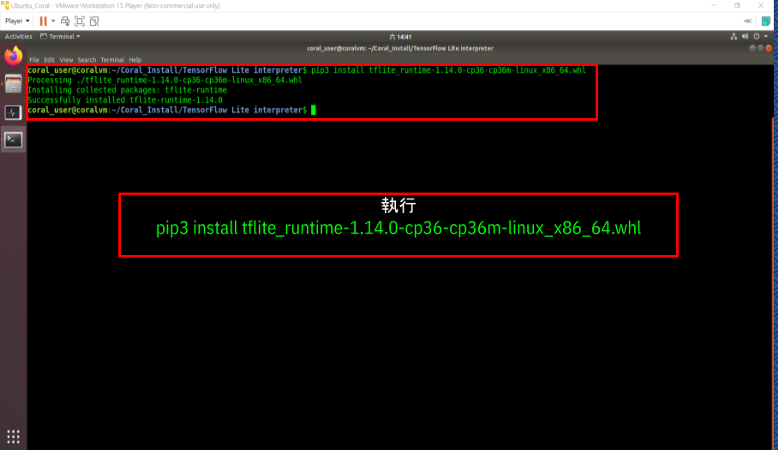
可參考Run a model using the TensorFlow Lite API
使用安裝腳本-EdgeTpu_TensorFlowLiteAPI_Examples_Install.sh
sudo bash EdgeTpu_TensorFlowLiteAPI_Examples_Install.sh
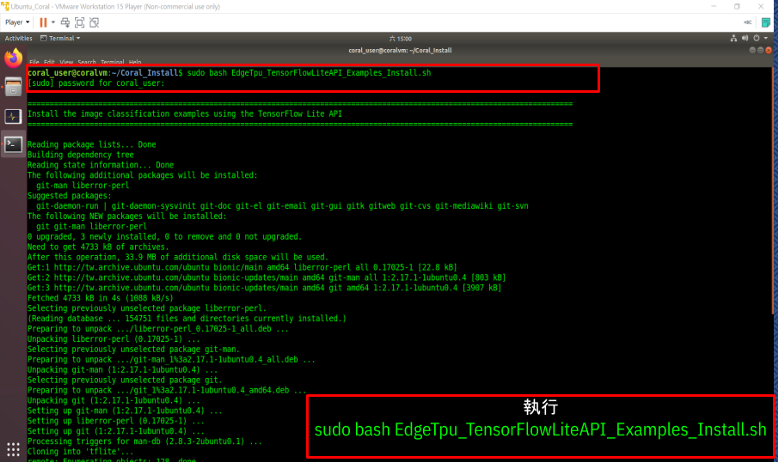
# 安裝git 套件
sudo apt install -y git
# 建立範例存放目錄並在建立完成後切換至該位置
mkdir coral && cd coral
# 透過 git clone 下載官方範例
git clone https://github.com/google-coral/tflite.git
# 切換至指定範例目錄結構內
cd tflite/python/examples/classification
# 執行範例所需環境配置安裝腳本
bash install_requirements.sh
# 更動該範例存在目錄結構權限，防止執行時會出現權限錯誤問題
sudo chmod 777 /home/coral_user/Coral_Install/coral/*
sudo chmod 777 /home/coral_user/Coral_Install/coral/tflite/*
sudo chmod 777 /home/coral_user/Coral_Install/coral/tflite/python/*
sudo chmod 777 /home/coral_user/Coral_Install/coral/tflite/python/examples/*
sudo chmod 777 /home/coral_user/Coral_Install/coral/tflite/python/examples/classification/*
sudo chmod 777 /home/coral_user/Coral_Install/coral/tflite/python/examples/classification/models/*
sudo chmod 777 /home/coral_user/Coral_Install/coral/tflite/python/examples/detection/*
使用範例腳本-EdgeTpu_TensorFlowLiteAPI_Examples_Run.sh
sudo bash EdgeTpu_TensorFlowLiteAPI_Examples_Run.sh
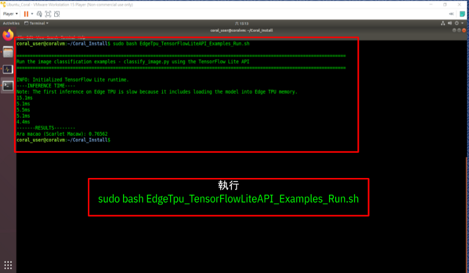
執行範例程式
# 主程式檔案 classify_image.py
# 第一個參數 --model 指定使用tflite模型來源
# 第二個參數 --labels 指定分類標籤來源
# 第三個參數 --input 指定輸入圖片來源
python3 /home/coral_user/Coral_Install/coral/tflite/python/examples/classification/classify_image.py \
--model /home/coral_user/Coral_Install/coral/tflite/python/examples/classification/models/mobilenet_v2_1.0_224_inat_bird_quant_edgetpu.tflite \
--labels /home/coral_user/Coral_Install/coral/tflite/python/examples/classification/models/inat_bird_labels.txt \
--input /home/coral_user/Coral_Install/coral/tflite/python/examples/classification/images/parrot.jpg
使用範例腳本-EdgeTpu_EdgeTPUAPI_Examples_Run.sh
sudo bash EdgeTpu_EdgeTPUAPI_Examples_Run.sh
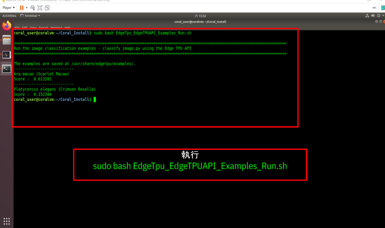
執行範例程式
# 主程式檔案 classify_image.py
# 第一個參數 --model 指定使用tflite模型來源
# 第二個參數 --labels 指定分類標籤來源
# 第三個參數 --input 指定輸入圖片來源
python3 /usr/share/edgetpu/examples/classify_image.py \
--model /usr/share/edgetpu/examples/models/mobilenet_v2_1.0_224_inat_bird_quant_edgetpu.tflite \
--label /usr/share/edgetpu/examples/models/inat_bird_labels.txt \
--image /usr/share/edgetpu/examples/images/parrot.jpg
可參考使用EdgeTpu應用在語音模型預測之簡單實例(ASR_Demo)介紹
使用安裝腳本-Download_ASR_Demo.sh
. Download_ASR_Demo.sh
腳本內容如下：
# 下載放置在Google雲端硬碟專案範例壓縮檔
wget --no-check-certificate -r 'https://docs.google.com/uc?export=download&id=1-Z5BAUND5Jq9yISo-n-cYWx115Rpwu4R' -O 'Audio_Speech_Recognition_TPU_Demo20191207.zip'
# 將下載完專案壓縮檔進行解壓縮
unzip Audio_Speech_Recognition_TPU_Demo20191207.zip -d ~/
配置安裝Python 所需Package，透過專案目錄內requirement_coral.txt需求清單，進行Package清單依序安裝
安裝指令：
pip3 install -r requirement_coral.txt
安裝完畢後再執行一次 pip3 list 會發現以下錯誤 ：
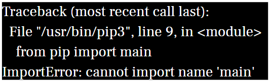
原始/usr/bin/pip3內容
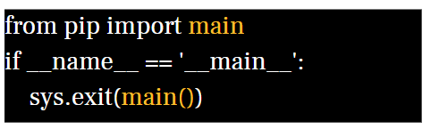
修正後/usr/bin/pip3內容
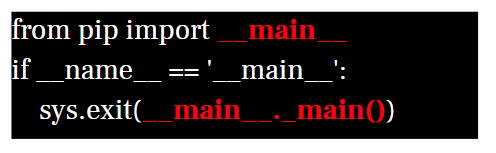
在 ASR_Demo 專案包內主要程式清單：
Config.py，參數配置程式檔。Gen_Datafile.py，主要用來自動產生各分類語音特徵文字檔。Train_Data.py，產生資料集、量化訓練、產生訓練後pb模型。Model_pb_to_tflite.py，將pb模型轉換成tflite模型。classify_ASR.py，執行語音分類識別，使用EdgeTpu Python API。Prediction.py，執行語音分類識別，使用Keras模型。執行模型訓練
執行指令：
python3 Train_Data.py
最後結果會放置在專案資料夾內：
model/model_pb/frozen_model.pb → 訓練好pb模型log_file/model_visualized.png → 模型結構可視化圖片log_file/Graph.png.png → Tensorboard模型結構可視化圖片執行模型轉換tflite
執行指令：
python3 Model_pb_to_tflite.py
model/model_pb/frozen_model.pbtflite_model/ASR_Model.tflitetflite_model/valid_data/down/29dce108_nohash_3.txt執行Edgetpu_Compiler
執行指令：
edgetpu_compiler -s /home/coral_user/Coral_Install/Audio_Speech_Recognition_TPU_Demo20191207/tflite_model/ASR_Model.tflite
tflite_model/ASR_Model.tflitetflite_model/ASR_Model_edgetpu.tflitetflite_model/ASR_Model_edgetpu.log執行 Audio-Classification
執行指令：
python3 classify_ASR.py
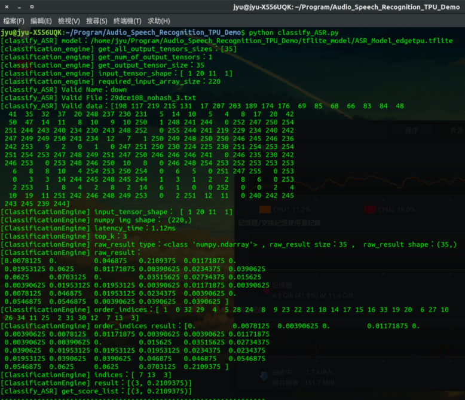
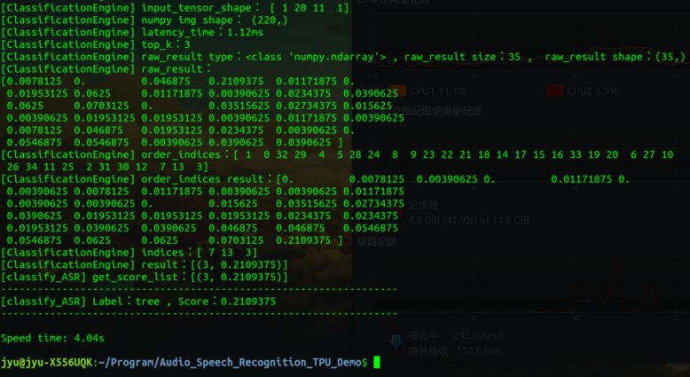